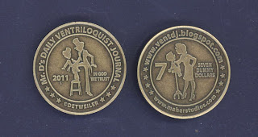

Seven more winners on the Eleventh!
2/11/2011
It's the 11th day of the month, year 2011 - time to draw the names of seven more winners, each to receive one of Mr. D's $7.00 Collector coins! This month's lucky 7/11 winners are as follows:
Tom Dahl (FL)
Christine Campbell (IL)
Bob Conrad (NJ)
Nancy Allen (UT)
Dave Bruhin
Sara Rice (CA)
Andy Mrkvicka (CO)
The next drawing for 7 free coins will be 3/11/11. In the meantime, I do have coins for sale: $7.00 each, postpaid. Contact Mr. D Coins are also for sale now on eBay (same price): Click Here
PS: Many consider 7/11 "lucky" numbers. Jay Johnson tells me this is especially true for him as his birthday is 7/11! Now that I know that, I'm going to send Jay a couple extra coins this July! Anyone else have a birthday July 11th?
{kind=link}

Tom Dahl (FL)
Christine Campbell (IL)
Bob Conrad (NJ)
Nancy Allen (UT)
Dave Bruhin
Sara Rice (CA)
Andy Mrkvicka (CO)
The next drawing for 7 free coins will be 3/11/11. In the meantime, I do have coins for sale: $7.00 each, postpaid. Contact Mr. D Coins are also for sale now on eBay (same price): Click Here
PS: Many consider 7/11 "lucky" numbers. Jay Johnson tells me this is especially true for him as his birthday is 7/11! Now that I know that, I'm going to send Jay a couple extra coins this July! Anyone else have a birthday July 11th?